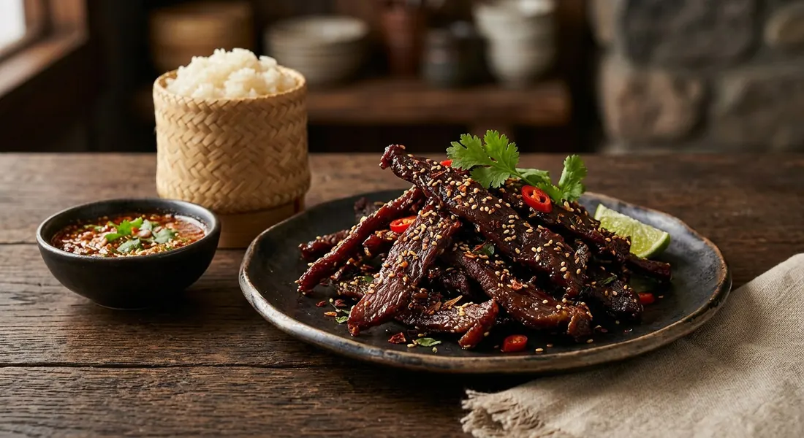

Beef marinated with a handful of pantry seasonings, dried in a single day's sun on a rack, then fried until the edges crisp — Thailand's answer to jerky, eaten warm with sticky rice.

เนื้อแดดเดียว says what it is: เนื้อ, meat; แดด, sun; เดียว, one. Beef that takes one day of sun. Wongnai's recipe page calls it the fried-beef dish "อร่อยตั้งแต่คำแรก" — delicious from the first bite — and says it is best friends with hot sticky rice. It is a preservation dish first and a recipe second: marinate, dry, store, then fry whenever hunger strikes.
The workflow is old and simple, and TrueID's selling recipe makes the economics visible: 1.5 kg of fresh rump or sirloin cap dries down to about 1 kg of finished product, vacuum-packed and ready to fry in three to five minutes. It works as a meal with sticky rice, as a snack on its own, and — TrueID's second recipe points out — as กับแกล้ม, drinking food, the same way northerners eat sai oua.
Wongnai is explicit about the oddest ingredient in the marinade: the oil. The vegetable oil in the marinade is not for cooking — it is the ingredient that keeps the sun-dried beef tender and juicy instead of leathery. TrueID's selling recipe describes the other half of the flavour as หอมสามเกลือ, the "three salts" aroma: fish sauce, light soy and oyster sauce layered in one marinade. And the sweet school, BABY MARDY's recipe adapted from the TV show ครัวคุณต๋อย and the southern restaurant สุใบดะห์, melts a full 200 g of palm sugar into a kilo of rump — the snack-shop style, sweet-salty and glossy.
Almost every Thai source agrees on the endgame: dry the beef until the surface is taut and semi-dry — หมาด ๆ — never until it is hard. The fry does the finishing. That is the line between nua dad deow and jerky.
| Thai | English | Amount |
|---|---|---|
| เนื้อวัวสันนอก | Beef sirloin | 500 g |
| น้ำมันพืช | Vegetable oil | 1 tbsp |
| เกลือป่น | Salt | ¼ tbsp |
| น้ำตาล | Sugar | ½ tbsp |
| น้ำมันพืชสำหรับทอด | Vegetable oil, for deep-frying | as needed |
The selling batch (TrueID, WeenayA): for 1 kg dried — 1.5 kg fresh rump or sirloin cap, lightly marbled; 3 tbsp pounded Thai garlic, 3–4 pounded coriander roots, 1 tbsp pounded white peppercorns, 3 tbsp palm sugar, 4 tbsp oyster sauce, 2 tbsp light soy, 2 tbsp good fish sauce, 2 tbsp vegetable oil; sliced along the grain 1 cm thick, kneaded 10–15 minutes, rested, sun-dried 3–4 hours flipping halfway, fried 3–5 minutes in medium-low oil. The spice-paste version (Aroifin, ELLE): 1 kg rump with fat; a blended paste of 10 coriander roots, 5 garlic cloves, ½ tsp pepper and ½ tbsp palm sugar, plus oyster sauce, light soy, fish sauce, seasoning sauce and oil; marinated 2–4 hours or overnight, pineapple juice kneaded in, then dried in a hot-air oven at 70°C for 3 hours. The snack version (TrueID): fatty beef with sesame oil, palm sugar paste and pineapple juice, sun-dried in a bamboo winnowing basket. The sweet southern version (Wongnai user recipe, สุใบดะห์): 1 kg rump, ½ ladle seasoning sauce, 200 g melted palm sugar, 40 g salt, 1 tsp pounded coriander seeds, ½ tsp red food colouring — marinated 5 hours, sun-dried 2.
Along or against the grain. TrueID's selling batch and Kapook slice along the grain (ตามลายเส้นยาว) into long strips; TrueID's snack version and the สุใบดะห์ recipe cut against it (ตามขวาง). Both are published as correct — along keeps whole strips, across shortens the fibres for bite-sized pieces.
The sugar. Plain white sugar in Wongnai and Kapook; palm sugar in Aroifin and TrueID's selling batch; palm sugar paste (น้ำตาลปี๊บ) in the snack version; and a full 200 g of melted palm sugar in the sweet southern สุใบดะห์ version.
Marinade length. 2 hours in the fridge (Wongnai), 1–2 hours (both TrueID recipes), 2–4 hours or overnight (Aroifin), and a patient 5 hours (สุใบดะห์). Kapook does not give a time at all.
The drying. 3–4 hours of strong sun (Wongnai, TrueID selling), 2 hours (สุใบดะห์), "until semi-dry" (Kapook), 3 hours at 70°C in a hot-air oven (Aroifin), and Kapook offers the microwave as a no-sun alternative. All agree on the endpoint: taut and semi-dry, never hard.
The tenderiser. Aroifin and TrueID's snack version knead fresh pineapple juice into the beef before drying; the other four recipes manage without it.
Sesame and colour. White sesame seeds go into Aroifin's and TrueID's snack versions and nowhere else. The สุใบดะห์ recipe alone adds ½ tsp of red food colouring — the cook's comment explains it stops the meat darkening in the sun.
The fry. Kapook double-fries for a darker crust; TrueID's selling batch single-fries for 3–5 minutes on medium-low heat; Aroifin fries over medium until brown and fragrant. Wongnai only says fry until cooked.
The cut. Sirloin (Wongnai), rump (สุใบดะห์, Aroifin, TrueID selling), or simply "beef with fat" (Kapook, TrueID snack). Every source picks a marbled cut; none picks a lean one.
This recipe is translated from the following Thai-language sources. Where they disagree, we've said so.
1. Wongnai — "วิธีทำ 'เนื้อแดดเดียว' เมนูเนื้อทำง่าย ทำกินได้ทำขายรวย!" by gam.sali (the recipe used here) — wongnai.com
2. Wongnai (user recipe) — "เนื้อแดดเดียวทอด" by 𝙱𝙰𝙱𝚈 𝙼𝙰𝚁𝙳𝚈, adapted from the TV show ครัวคุณต๋อย and restaurant สุใบดะห์ (the sweet southern version) — wongnai.com
3. Kapook — "เนื้อแดดเดียว อร่อยนุ่มเต็มคำพร้อมวิธีหมักเนื้อแจ่ม ๆ" (the double-fry and the microwave drying) — cooking.kapook.com
4. Aroifin — "วิธีทำ เนื้อแดดเดียว สูตรหมักเครื่องเทศ หอมแบบจัดเต็ม" by ELLE (the spice-paste version and the 70°C oven) — aroifin.com
5. TrueID Food — "สูตรเนื้อแดดเดียวทำขาย พร้อมคำนวณต้นทุนละเอียด มือใหม่ทำตามง่าย กำไรปัง" by WeenayA (the selling batch) — food.trueid.net
6. TrueID Food — "วิธีทำ เนื้อแดดเดียว อร่อยนุ่มเคี้ยวเพลิน กินเล่นก็ได้ เป็นกับแกล้มก็ดี" (the pineapple snack version) — food.trueid.net